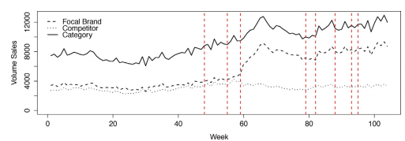
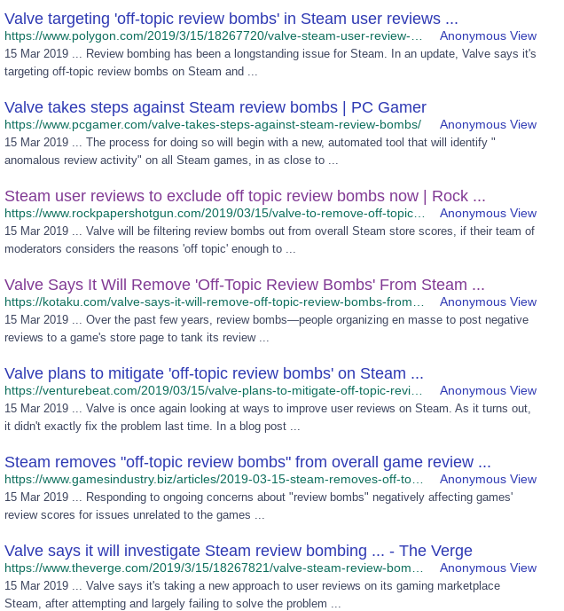
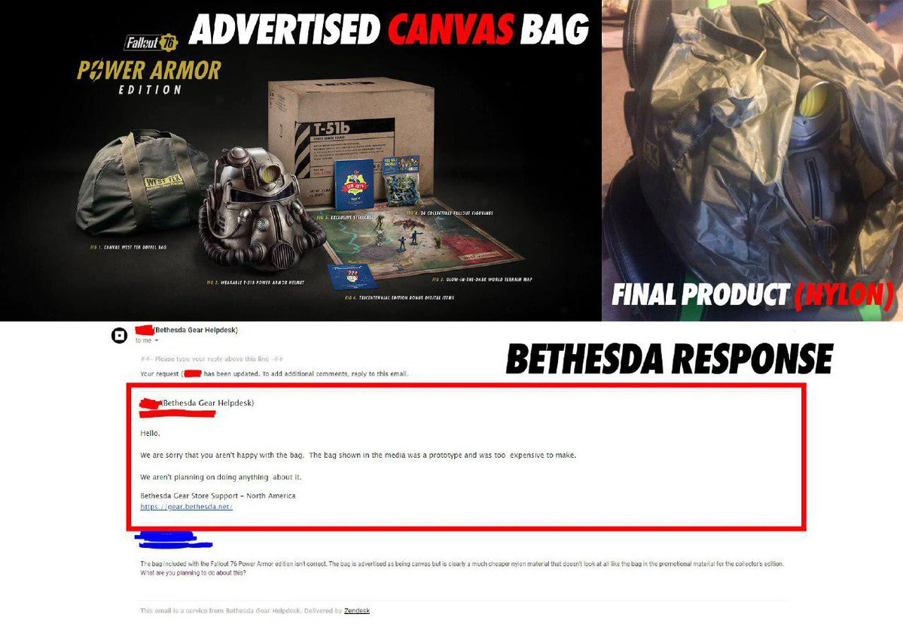
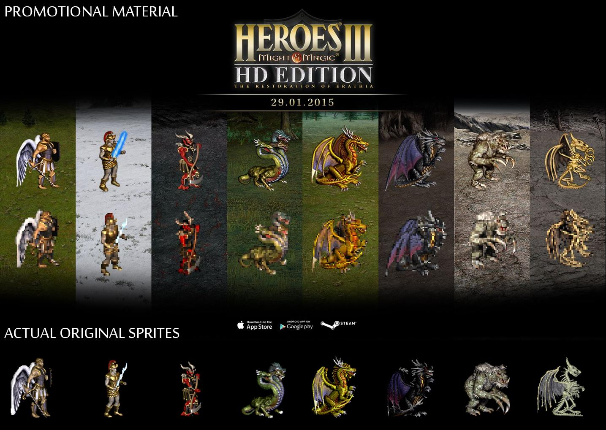
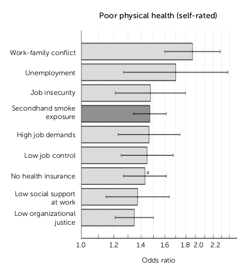

The entire store-shopping experience is tightly controlled to fuel endless consumption. Let's start with the free samples being given away sometimes. The word will quickly spread that a certain store is giving out free samples and more people will be coming there. They might be compelled to buy more of the product then, when otherwise they would never have looked at it. I mean, do you think the capitalists would give away stuff just for nothing? No way - actually, it is scientifically proven that free samples are an effective way to increase sales:
This information comes from a massive paper (which I didn't fully read - just lifted the picture really) called An Assessment of When, Where and Under What Conditions In-Store Sampling is Most Effective
. Surely, the capitalists must access to that data - they wouldn't leave anything to chance. After all, profit must be made in the end. Another way to accomplish that is the "put candy at the checkout" strategy. It's called "impulse buying" and the way it works is: you're waiting in line and in your field of view is a bunch of various snacks. Eventually a temptation will appear and you will buy one of them even though you didn't really want to. A recent study by the EHI Retail Institute for Wrigley’s German subsidiary found that the checkout zone generated a sales return of €35,000 ($47,000) per square meter – seven times above the average for the entire store.
So it is very profitable indeed. And self-checkout kills the profit: https://www.pymnts.com/restaurant-technology/2017/confectionery-companies-the-other-unintended-casualty-of-self-checkout/ (archive)- We’ve done a number of studies. It’s billions of dollars since self-checkout started in 1992. The merchandising side has to come back and chase this thing.
The average time spent grocery shopping – not including time spent getting to and from
the store – is 41 minutes.
That is 41 minutes of shitting in your brain with advertisements (some stores even have these huge screens at checkout - but sound-based ones are worse, since you can't just avoid looking at them). Of course, the ads are not limited to stores themselves - they're all over the place. They put them on billboards, buses, flats, TV channels. It seems all space exists now solely to fill your mind with bullshit. The ads themselves are not just made on someone's whim, of course - it's all carefully calculated. There's this thing called marketing science which focuses on just that - https://www.decisionanalyst.com/analytics/marketingscience/ (archive). Some quotes:
What combination of marketing inputs (positioning, messages, media advertising expenditures, distribution channels, new products, sales organization, etc.) will maximize long-term sales revenue or profitability?
What combination of positioning, themes, imagery, music, and colors creates the most effective advertising for a company or brand?
How can these design variables be manipulated to maximize market share or profitability?
How can the direct marketing to each of these target segments be optimized?
What are the optimal number and type of salespeople to maximize market share or profitability?
The goal is not to maximize customer satisfaction (no company can afford that), but to optimize customer satisfaction and/or loyalty.
And many, many more. As you can see, every fucking little thing is taken into account. So the next time you see an advertisement, keep in mind it was most likely made according to these quotes. The last one in particular is a gem - it shows that capitalism doesn't give a shit about customer satisfaction. This is also proven by the fact that products are made to break - for example batteries (archive) or clothes (archive). Of course, since there is a new summer collection
coming out in a few months, you don't need your current ones to last, do you? What, you mean you can fix your old stuff? Companies are intentionally making it increasingly harder to do so, for example Sony (archive) and Apple (archive), and tractor producers (archive). I remember being annoyed when I tried to unscrew my Nintendo DS Lite and couldn't with any of my screwdrivers. Then I learned that they've made a specific screwdriver just for it. Of course if profit at all costs is the goal, this kind of practice will be the standard.
One of the biggest victims of capitalism's claws, Video Games turned from an amazing piece of entertainment to a disgusting cash grab.
At the height of PC gaming, you used to buy a disk, put it in the drive, install the game and be able to play (some of them didn't even require a CD after installation, which means you could freely share). Now you're lucky if there is data on the disk at all - for example, Metal Gear Solid 5 had only a steam installer. Steam itself is pretty much a PC gaming monopoly these days - and to play the vast majority of PC games, you need to sign up for an account, and agree to their terrible privacy policy and TOS (that can change anytime and you will lose your games if you don't consent to the updates). Then, you can only play the games you bought through that account, which means you need to go online (a few games have ways to bypass the protection). Take a guess as to what happens if Steam ever dies. If a game has an update available, it will be automatically downloaded. If you want to share your game, you need to give it up. Publishers can also revoke your keys, proving that the games are not really yours.
So PC gamers are pretty much fucked. What about consoles? Nintendo still allows to put the game in and play, and the cartridges are pretty durable. There's also no problem with using many different systems. Nintendo is an asshole company in many ways, but here they're doing pretty well. PS4 and Xbox One seem to be "all clear" as well (however, Microsoft already had plans to implement heavy DRM on their console at launch, and now they will be ditching the disks altogether). However, having an online connection is still expected these days, so many games are released only digitally, and you get other online exclusive features (such as patches and downloadable content). Of course, with connectivity comes the usual spying - and something even worse - claiming control all data on your device - you also grant to Nintendo a worldwide, royalty-free, irrevocable, perpetual, non-exclusive and fully sublicensable license to use, reproduce, modify, adapt, publish, translate, create derivative works from, distribute, perform and display your User Content
(see? Told you Nintendo are assholes!). They can also render the system permanently unplayable
if they dislike the software you've installed there or even "connecting unauthorized devices".
Due to the online requirement, games are also released broken at launch in hopes of issuing a patch later (for example the Skyrim Special Edition (archive), which not only did not fix bugs present in the original one, but introduced new ones). When the Internet wasn't a given, the developers didn't really have an opportunity to "fix" a game post-launch, and had to make sure it was actually finished on release. Else it would simply be ignored and fall into obscurity. On the other hand, today's games stay bugged for months after release (archive) and since people are already used to being exploited in this way (hey, you can even use them as free bug hunters - how economical is that?), they tolerate it. We're clearly moving towards a mostly-online, corpo-controlled experience, and this recent development brings us closer to it:
At the 2019 Game Developer Conference, Google has presented their game streaming service called Stadia. All you need to play games with it is an Internet-compatible device (the ultimate convenience?). But since all the game data is coming from Google's servers, the users lose any kind of control. If this ever gets popular (like Steam has despite all its flaws), it will very likely mean the end of modding, cheating, and piracy. Not only that, but Google will be able to track and individually control every one of Stadia's players - such as by injecting ads or modifying their gaming experience on the fly (by integrating it with Google Assistant, which they admitted they want to do). The biggest issue, though, is that a developer will be able to delete a game, and there will be nothing you can do to play it again. New FIFA came out? The old one's trashed and you're forced to shell out the money. The ultimate failure for the players is also the ultimate success for the capitalists.
Developers used to release free demos of games, so that you got access to a few levels and were able to decide if you want to shell out the money. These days, you have to rely on "sponsored" reviews, where the reviewers must agree to terms such as Videos will promote positive sentiment about the game. Videos must not show bugs or glitches that may exist.
and Persuade viewers to purchase game, catch the attention of casual and core gamers [...]
. Written reviews do not avoid the issues - people even get fired (archive) for giving a game bad ratings - Eidos threatened to pull ad revenue from Gamespot as a result of his review, and though this kind of thing is relatively common in games journalism, the nascent management team panicked and decided that Gerstmann was unreliable.
There's one big thorn into the manipulator's side, and that is user reviews. Clearly, the tactics used to control the journalists will not work here. But is there something else the censors can do? Sure is, and they are happily taking the opportunity. Classic problem-reaction-solution: first, imagine a "problem" - which is the actual players rating a game negatively because it's terrible (isn't that the purpose of reviews in the first place?). Then, convince people that the user reviews are unreliable (In short, review bombs make it harder for the Review Score to achieve its goal of accurately representing the likelihood that you'd be happy with your purchase if you bought a game.
) and therefore need to be controlled, even though their own evidence refutes that - When we look at what happens with the Review Score after a review bomb, we see that it generally recovers, in some cases fully back to where it was beforehand.
Now that we've got the "problem" and "reaction" taken care of - we need the solution. The first attempt was to simply provide graphs showing the timed rating changes - quite benign, right? The second, over a year later, was much more malicious though - can't be too blatant and remove negative user reviews, so we will just make them not count towards the displayed score). To control the narrative, they recruited all the journos to spit out the same exact nonsense:

How eerie. One snap of the finger and all the news sites completely conform to Valve's wishes, even down to the article title (notice how they're all mentioning off-topic review bombs? As if it's so obvious that they're off-topic). But of course it's simply the dissatisfied players taking issue with the same flaw a game has - which is using the review feature the way it was intended. But according to Valve and the journos, that's a "review bomb" and has to be controlled and censored. When all the news sites say the exact same shit in their headlines, is that an "off-topic news bomb" ? According to their logic, it should be - yet the search engines aren't censoring those. In the end, we're slowly losing one of the only ways we've been given to combat the developer's narrative about their games - if the news pieces and reviews are not representing us anymore, what remains?
Today's gaming caters to the lowest common denominator - as in, the casual gamer. Much to the dismay of true fans, this often results in sequels that shit on what made the series good in the first place. Some examples of this are Ace Attorney, Pokemon, WipeOut, Skyrim, Thief 4, and many others. Though the degree of decline is not always hu/ge or even significant, it is noticeable. For example, WipeOut 2048 by default enables the "Pilot assist" feature, which will help you during hard turns and such. But we've managed to do without it in WipeOut Pure and Pulse, so what has changed? That's an example of a slight issue, barely worth focusing on - but some series, like Pokemon, have been completely ruined. With every new installment, we get more and more bad changes such as mobile Pokemon centers, poison wearing off by itself, more items being given away for free, early overpowered Pokemon, re-catchable legendaries, "rivals" that are actually your friends, Roto-Powers which make it pretty much impossible to lose a fight, reduction in the amount of Pokemon gym leaders have, and I could go on. All of this to earn more profit - as if Pokemon Red and Blue weren't successful enough.
Not only that - the publishers are now bowing down to whiners that don't even play the games they're criticizing. For many years, there has been a coordinated attack on gamers - as in, the people who actually buy and play the games developers produce. And anytime the publishers go along with those people, their profits go down the toilet (because they alienate their actual customers). What are the non-gamers complaining about, anyway? How about violence, which has been apart of gaming since the medium was created pretty much; and sexual content, which is also a gaming staple. What is weird is, even though these people don't play games as proven by the lost sales, they still manage to have a lot of influence. They try to get people fired for wrongthink and sometimes suceed. It took them only 3 hours to get THQ Nordic to apologize for an interview they did with 8chan (you know, a forum with actual gamers on it). Even though there was nothing whatsoever there about "pedophilia" or "white supremacy", they still pushed that narrative. And because of their influence, whole game series get ruined by, for example, forced diversity even when it goes against actual history which the series has stood for so far. There's nothing wrong with including a black, muslim or female character if they actually fit the damn game, instead of solely to mark him / her off the imaginary diversity checklist (which is the actual discriminatory position!). Has anyone ever complained about Lara Croft, for example? No, in fact she's one of the most iconic and loved characters of gaming. That is, until the SJWs came onto the scene and saw a problem with her "sexualization" (which has never bothered any of the women playing the game, or even cosplaying as her - I remember a lot of those from gaming magazines when I was a kid). Why does all this happen? Probably because the people who make the decisions about what gets included into a game these days are a bunch of suits that really know nothing about the hobby - as proven by the whole THQ Nordic situation, where the CEO said:
This letter is to offer my sincerest apologies and regret for THQ Nordic GmbH Vienna's interaction with the controversial website 8chan last Tuesday, February 26. I condemn all unethical content this website stands for.
Maybe you should have researched more. There is no unethical content on /v/ - that's all SJW delusions (and by lying about there being "child pornography", they are the ones being unethical).
As a Swedish based, fast growing group, we firmly support equality and diversity. We are also working actively to combat discrimination, harassment, and misconduct.
Maybe you should be working to "support" good game development and "combat" SJW idiocy instead (by the way, it is them that are harassing people - even this exact situation is a proof). Let me reiterate: these people do not play games - bowing down to them is pointless. Your actual audience is 8chan and similar places, and yet you (being a clueless suit) chose to publicly disown them. By the way, no matter how much you try to appease the SJWs, they will never be satisfied. Again, this situation provides ample evidence:
I am terribly sorry for the short-sightedness of my (!) decision, and promise to be far more vigorous in my assessment of these activities in the future.
Philipp Brock, one of the THQ people who was posting on 8chan, apologized for that later (due to SJW pressure no doubt). And yet that wasn't enough for them:
Brock does not explain why he failed to "do proper due diligence" researching 8chan, yet simultaneously knew someone at 8chan would need to "take care of the nasty stuff".
Brock does not explain why he engaged with users discussing and posting "loli" images.
Brock does not explain why he engaged with users posting about the "SocJus crowd" on a website used to mount notable campaigns of harassment.
Every time you fulfill a wish of the SJWs, they just throw three more demands at you.
When you are a fan of a series, you don't want to feel like you're missing out on something - and the publishers mercilessly take advantage of this human psychological trait. They create a "regular" edition of a game, and then an "enhanced" or "collector's" edition which would include items like figures, artbooks, or wearables. Though that is exploitative in itself, they are not even beyond false advertising - for example, Fallout 76 was supposed to include a canvas bag, but it was instead nylon: https://gamerant.com/fallout-76-collector-edition-bag/ (archive). 
Another way to take advantage of this human psychological trait would be shitty remakes trying to cash in on nostalgia, such as Heroes of Might and Magic 3: HD Edition, which not only is inferior to fanmade mods, but also comes with its own false advertising:  An even more egregious example is Duke Nukem 3D: 20th Anniversary World Tour, which was so shitty that the developers have had to remove all previous versions of the game (archive) from Steam and other stores so that people would have to shell out money for their newly shat out turd. This also meant we've lost a way to legally play the original Duke Nukem 3D expansions, since the remake did not include them. How about the NES or SNES classic as another example of nostalgia pandering? These are simply glorified emulators that only support a small subset of games released for these systems. Of course, to make people buy those, they shut down ROM sites (see? Assholes), even though there is a possibility they use the ROMs from those sites themselves. How shameless, if true.
It does not end here - you'd think releasing an Ultimate Edition
of a game would mean it includes everything ever - not so. In fact, some of them do not even contain the actual game:
Add to that predatory DLC (archive) and microtransactions, and you end up with a situation where games are created entirely for profit. The latter issue requires more thorough examination. You know how when you play Candy Crush it tries to get you to "buy a life", or "buy a power-up"? That's microtransactions and games are increasingly being made around them. Because once you include them, there is no other option - since the person who buys them will get such a huge advantage, the game must take that into account. So the levels become harder to compensate, which compels people to shell out money for microtransactions. "Just don't buy them!" is not the answer then, as you can see. Multiplayer games make it even worse, since you're directly paying to beat real person, giving more incentive. And this, my friends, is what will doom gaming in the end - we can sort-of deal with the DLC, glitches, fake bags, causalization, "game not included", censorship, forced diversity, whatever - as long as the game does not expect you to constantly spend money on it. Otherwise, we're not dealing with entertainment anymore, but digital chains.
Not only are today's games badly designed, overpriced and exploitative - the big corpos will not even let us fix them ourselves. Nintendo is the biggest culprit (again, assholes) - here is a list of (some of) their transgressions:
Now why do they do so? Obviously, they want to make a profit both from the new games they make, and rereleases of old ones. After all, they've brought the first two generations of Pokemon back from their graves to the 3DS Virtual Console. The NES and SNES classics are another proof. And they can't risk their recent turds being outcompeted - Pokemon Prism / Uranium had millions of downloads and were widely considered better than the official creations, while Pokemon Ultra Sun / Moon was a total disappointment. That's also the reason ROM sites get brought down - if people can just download Pokemon Red / Blue from the Internet, why bother with Nintendo's ports that don't even add anything? Not to mention the many hacks available that way improve those ancient games. And if they ever wanted to revive yet another old classic, it can't be simply available for download out there, can it? So that's why ROM sites are a very important target. But why go after something like the Mario Commodore port? Remember, capitalists are psychopaths and to them, just sending a message to the sheep (what capitalists consider consumers) is valuable. Absolutely no modifications allowed! I'll be honest, though, and say that not all companies are so terrible:
Nintendo’s frequent issuing of DMCA notices even led Sonic the Hedgehog publisher Sega to respond by expressing its support for fan-driven projects based on its games. Further, Sega eventually brought on a team of fans to develop Sonic Mania, which released in 2017 and went on to become a commercial success and the highest-rated Sonic game in 25 years.
So, it seems it's still possible to be a "good guy" (or a not-so-bad guy) and stay relevant in capitalism. But the monsters like Nintendo usually win out (when in a better system, they would be rotting 6 feet under already).
Another type of entertainment ruined by capitalism. Let's first consider what even makes high-level sports possible - huge sponsorships such as from car companies, airlines, credit card companies, watch companies, etc. So sports can exist only due to the money from these giant unethical corporations. Whenever you watch sports on TV, much of your time will be spent seeing ads for their products. Not only that, but the players themselves are also sponsored - that is where much of their massive earnings come from. However only the very top can really benefit from that - for example, tennis players outside of the top 100 literally struggle to make it. Since traveling, coaching and stuff costs money, and small tournaments just don't pay a lot (for example, read this story (archive)). Which brings us to the next issue...
And that is the involvement of betting companies / syndicates in sports. Top clubs such as Real Madrid and Barcelona (archive), or Manchester City (archive), have them as sponsors. Even whole leagues (archive) have bookmaker backings. This means anyone watching a match will be suspected to seeing a bunch of ads for those, and might succumb to betting where the capitalist wins in the end. But that's not all - an investigation revealed 380 fixed football matches (archive) in Europe, as well as 300 more on other continents. This means that any match you watch might be "dirty", as in - a player or referee has been bribed to push the result a certain way. It all becomes a circus then, like wrestling. Tennis is another sport that suffers, and nothing would be done if certain players weren't willing to rat the fixers out (archive). Of course the real cause of this is capitalism, which makes money the #1 goal in life for people. And what is a poor tennis player to do if he doesn't manage to get into the top 200 or so and struggles to survive?
Let's look at something else now. Many people derive pride from being fans of their city's or country's football club, since well...that's just something you're supposed to do, right? But how are the clubs actually connected to the town they're in? You're lucky if your club has even two players from the town it resides in - and many will be simply imported from other countries (archive). Local teams cannot really exist since they rely on the money earned from selling their best players to the richer clubs. Not only that, most of them are just experiments for businessmen (archive) to get rich on, and they're sold and bought like used shoes. Even the "rivalries" are fake since players routinely leave for the rival clubs. All while the fanboy is taken in by misguided sense of patriotism fueled by merchandise such as shirts, bags and watches. Then take into account the TV money, overpriced tickets, player-advertised products...and you see that sports are about nothing other than profit anymore.
When a child is born, his empty, innocent mind will start to be filled with capitalist definitions of worth that consist of "having more, newer stuff". Even if the parents try their hardest to instill some other teachings (but why would they - since that is what is reinforced in their own brains every day?), the real world will quickly verify that. When the child goes to school, he will see that his richer peers are treated better due to the expensive stuff they have on them. Statistics prove (archive) poor children are more likely to be bullied - In India poorer children were 12 percentage points more likely to be physically bullied and 19 percentage points more likely to be verbally bullied than the least poor children.
. Example quote of the kind of bullying poor children suffer from:
I went to school barefoot because my shoes were torn apart. Then students laughed at me, and some of them insulted me calling me a “poor boy”.
Even if your situation is not as bad, it will be easily detected that you're poor sooner or later, and you will suffer. 'School trips are becoming so expensive, I can't afford for my children to go' (archive). And that child who does not go on trips will be known as the "student who can't afford trips" and be alienated. You can just imagine the kind of stress this will create in the family, and it doesn't end there. How to make it seem like our child is rich even though he's not? How to make him respected? Expensive clothes, newest smartphones, jewelry...poverty can't be hidden in the end. Though some schools have tried to combat the issue (archive) by, for example, banning certain brands of clothes - that is totally not the way to go. As said, there's thousands of ways to show off your good financial situation. The real problem here is the capitalist culture, equating your worth to the things you have.
This continues way into adulthood and massively increases depression rates. Capitalism has created a dog-eat-dog world where instead of people working together, you have one person trying to prove he's better than the other (according to the capitalist definitions of worth) - while the system keeps fucking us all. Being jealous of Facebook friends 'leads to depression' (archive)
Facebook members were particularly stressed when their friends posted pictures of luxurious holidays, or used the social network to boast about new houses or expensive cars, the study found.
From another article - Heavy social media users 'trapped in endless cycle of depression' (archive):
“People who engage in a lot of social media use may feel they are not living up to the idealised portraits of life that other people tend to present in their profiles.
Of course it's all fake in the end - just like most of our capitalist society. People try to put up their best impressions, and it is easier online than in real life. All of this is fueled by the advertising companies alleging you are inadequate if you don't have their newest product. Worst of all, people who are the most vulnerable are particularly targeted, destroying their already poor mental state: Facebook research targeted insecure youth, leaked documents show (archive) - This information, which Facebook calls “sentiment analysis” could be used by advertisers to target young teenager when they are potentially more vulnerable.
. And as advertising gets more advanced while people lose more and more jobs (due to automation), the situation will just get worse and worse. Recall the prognosis that 800 million people will lose their jobs in 10 years. That means increasing homelessness, and that group has a high rate of depression (archive) - A Toronto study found that 66% of people experiencing homelessness experienced serious depression sometime in their lifetime, and 56% did so in the past year.
And as long as the capitalist "I have it better than you, haha" culture is here, no one will help them - instead they will be alienated even more.
The alternative - having a job - is often not much better. The average American spends 47 hours a week (archive) at work; and Long work hours increased mortality by nearly 20 percent
according to this article (archive). From there, we can also glean some other useful information, for example:
Job security is of course reduced by increased automation. That also causes unemployment, which then in turn leads to Work-family conflict
(and I have personal examples proving that that happens). High job demands are also affected by unemployment, since a worker who slacks off can be easily kicked out (after all, there are a bunch of others to replace him). And with high job demands comes this (archive) :
A recent investigation revealed that emergency services were called on at least 189 occasions for attempts at suicide, suicidal thoughts, and other types of mental health episodes at Amazon warehouses during a five-year period. The incidents occurred at 46 different Amazon warehouses across 17 states. The accounts are troubling, with 911 calls detailing people trying to cut and kill themselves.
People are literally killing themselves over Amazon work conditions.
In 2011, reports emerged that the company hired ambulance crews to wait outside on hot days for workers who experienced problems related to the heat as they tried to keep up with demanding production requirements. A local ER doctor who had treated some employees for heat stress actually reported it as an “unsafe environment” to OSHA, who stepped in and gave them corrective steps.
But Amazon would have none of these "reports":
A year later, the Seattle Times reported that the underpaid, overworked employees at a warehouse in Campbellsville said they were pressured to manage their injuries in ways that wouldn’t trigger an OSHA report – for example, by claiming to medical personnel that their workplace injuries were actually due to pre-existing conditions.
And of course, you'd better not stand up to them or you will be kicked out (or perhaps, replaced by a robot?). Amazon has also tried to lock their workers up in cages (archive), but fortunately gave up on that idea. Many jobs, however, are already very close to being like that - such as being forced to sit in a very small room exchanging money. And the people having those jobs usually have no other choice. Other jobs come with their own stresses, such as enduring traffic jams, being recorded by cameras at all times, having to be on the phone also at all times (even during "free" days), models being forced to take extreme measures (archive) to lose weight, pornstars being humiliated and abusedbeing bullied by the boss and I could go on and on. Almost as if the whole job system existed to ruin people's mental health in any way possible.
The same kind of chart as above was also applied to physical health:

But since we've already discussed those issues, let's move on to some other, perhaps more relevant, factors affecting people's health:
Let's start with food - something you do have to have to stay alive. There is a multi-billion dollar industry seeking to make their food as addictive as possible, and that same food just so happens to ruin your health as well. One food consultant has provided us with this insightful quote (from https://modernhealthmonk.com/food-addiction/ (archive)):
“All of this has been processed such that you can wolf it down fast . . . chopped up and made ultra-palatable . . . Very appealing looking, very high pleasure in the food, very high caloric density. Rules out all that stuff you have to chew. When you’re eating these things, you’ve had 500, 600, 800, 900 calories before you know it. Literally, before you know it.”
The above link contains some more interesting information:
In studies done on mice [...] the breaking point for foods high in sugar and fat were a step below cocaine. Animals are literally willing to work almost as hard to get either one.
But, interestingly enough, cocaine [ and the foods we’re talking about ] don’t cause the brain to curb its dopamine response at all.
So, in terms of the addiction potential, junk food is just as effective as cocaine. How do the food giants accomplish this? From: http://themilitarydiet.com/salt-sugar-fat-addiction/ (archive)
There’s more science in that melty orange snack than you might believe. Frito Lay employs a team of 500 chemists, psychologists and technicians at a research plant near Dallas for a cost of $30 million a year to create the perfect crunch, mouth feel and aroma for their products. Frito Lay also has a $40,000 device that simulates a chewing mouth to create the perfect ‘break point’ of a chip. It turns out people like about four pounds of pressure per square inch. Cheetos are one of the most engineered products on the planet, designed specifically to make the brain say ‘more’. The Cheetos’ ability to melt in the mouth is called ‘vanishing caloric density’. If something melts quickly, the brain thinks there’s no calories so you keep eating until you’re finished the bag.
The structure of junk food is precisely set up just so you will eat more. From another article (archive):
"I was totally surprised," he said. "I spent time with the top scientists at the largest companies in this country and it's amazing how much math and science and regression analysis and energy they put into finding the very perfect amount of salt, sugar and fat in their products that will send us over the moon, and will send their products flying off the shelves and have us buy more, eat more and …make more money for them."
And so are the ingredients. Here's what an insider working for 15 years in many of the food giants has said:
"There were certainly times that I felt uncomfortable or troubled by what I was doing," he said. "I think that’s ultimately one of the reasons why I left the industry. As you start to get glimpses of products and you understand better how consumers are using them, and then you see trends like obesity and health issues that are increasing, mainly driven by the food we eat, it was hard for me not to just take a more thorough assessment of what I was doing."
So, it finally hit this guy that his "work" is harming people, so he left his job and actually started a blog critizing his previous occupation. Another issue fueling the consumption of junk food is their ubiquitous advertising. From http://specertified.com/blog/view/how-much-do-companies-spend-marketing-junk-food-to-children (archive):
Bright boxes of snacks and cereals featuring familiar characters line the shelves, often at the child’s eye-level. On television, children’s programming is interrupted by commercials for junk food. [...] Food companies market products in movies, video games, toys, clothing, websites and other merchandising
Not to mention buses or just randomly placed billboards. I've even seen them on flyers in hospitals (!). Some statistics from the same article:
So, the industry uses four tactics to ensure you're eating their food: First, they advertise it everywhere they can and as much as they can. Second, they have their restaurants everywhere - there is 152000 fast food outlets in the United States. Taking their population into account (328,608,560), it means one per 2186 people - and only one cinema per 8136 - almost 4 times less. Third, as explained in the Shopping section - even in regular stores, the junk food is put into the places where you can't avoid it for the longest time. And fourth, they make it addictive with a combination of structure, amounts of sugar/salt/fat and "flavour enhancers". Now that we've established this, let's check out the impact of these foods on health:
And lots, LOTS more. Pretty much every disease and dysfunction you can think of has been linked to the consumption of junk food - so, that is the main factor destroying people's health. But there are others, such as fluoride in the water, polluted air, cell phone radiation, 5G WiFi, second-hand smoking...Why do we have water and air pollution? Because the capitalists must dump their waste products somewhere. 5G WiFi and the widespread usage of cellphones are just the result of blindly following the capitalist notion of progress. People smoke due to the stress of living in a capitalist society and even non-smokers have to suffer with them. So, as we can see, capitalism ruins our health in many ways. And what options does it offer for sick people? "Modern" medicine, whose record is abysmal:
And again - many, many more. Modern medicine does not cure diseases - seriously, if you search for "diseases cured by medicine" all you get are various infections allegedly wiped out by vaccinations. But no chronic disease, certainly. And the reason for that is it's not profitable. What is, on the other hand? Producing drugs, doing surgery, scaring people into useless and dangerous screenings. In fact, if a medicine causes another disease or there is a complication after surgery it's even better - more profit for the capitalists, since now the sick person has to do more drugs and procedures. The goal is to keep the patient alive - but dependent on the medical system - for as long as possible.
Every so often, you hear news saying that a cancer cure is just around the corner. However, modern medicine has pocketed 100 billion $ from cancer drugs in 2014. Do you think they would just give up all those profits? There is no chance of seeing a cancer cure from those "researchers" -"cancer funds" are pretty much a fraud and the scammers are laughing their way to the bank. Not only is modern medicine harmful, it also prevents us from finding out about alternatives, which do exist. Don't get me wrong - "natural medicine" is also an industry and you can find scammers there as well - but at least they don't persecute or kill their opponents. Many of the most effective natural therapies have either been made illegal or had a disinformation campaign run on them. Though there are some options today - in the end, for true health to be cultivated, capitalism has to die.
The amount of waste products generated by the capitalist civilization is unimaginable. Most of what has a package will have it be thrown away immediately upon opening (video game collections, etc aside), and packages are often bigger than the product inside them. In the EU, the 2016 combined amount of packaging waste per person was 169.7 kilograms. This means almost half a kilogram per person per day just from packaging. Recycling does not fix the problem. So, all these packagings are left for the Earth to deal with, causing untold environmental damage, including directly killing animals and poisoning rivers forever. And precious few products can be bought without a packaging at all - mainly some clothes and...okay, let's look at that first.
Cloth production is the second most environmentally harmful industry. Some quotes:
Fashion is a complicated business involving long and varied supply chains of production, raw material, textile manufacture, clothing construction, shipping, retail, use and ultimately disposal of the garment.
A general assessment must take into account not only obvious pollutants—the pesticides used in cotton farming, the toxic dyes used in manufacturing and the great amount of waste discarded clothing creates [...]
Just the dyes cause massive environmental pollution.
While cotton, especially organic cotton, might seem like a smart choice, it can still take more than 5,000 gallons of water to manufacture just a T-shirt and a pair of jeans
All while there are massive water shortages in the world.
It's estimated that it takes about 70 million barrels of oil just to produce the virgin polyester used in fabrics each year.
Made from petrochemicals, polyester and nylon are not biodegradable, so they are unsustainable by their very nature.
As we can see, artificial materials aren't any better.
Globalization means that your shirt likely traveled halfway around the world in a container ship fueled by the dirtiest of fossil fuels.
And that applies to pretty much every industry, of course - since the vast majority of production these days is controlled by a few big corpos shipping to every place in the world.
H&M's CEO Karl-Johan Persson said, "In order to remain a successful business, we need to keep growing and at the same time respect the planetary boundaries."
Ha ha, that's impossible of course. Either you have growth or reduce waste - and capitalism always leans towards uncontrolled growth.
But real change in the clothing industry will only come if the big, affordable brands find a way to make and sell sustainable clothing.
They won't since it would cost them more. And even if they did, that doesn't fix the problem since there will still be issues with production, transportation, worker exploitation, etc. It's like using uMatrix and hiding behind a VPN to deal with the shittiness of the web - while the core problem remains. Anyway, we could go on endlessly about waste - for example electronics or food - but there are even bigger examples of capitalist environmental destruction. Namely, deforestation and genetically modified food. Let's start with the first one:
So what is deforestation? Simply, cutting off trees so that the land can be used for something else. What effects does it have? Animals are forced into smaller (or already occupied) areas, (possibly leading to their extinction). Even water-dwellers are affected. If you'd think people would be spared, you'd be wrong:
Ten years ago, the Cambodian government granted 20,000 hectares (49,000 acres) of land to a Thai company to plant sugarcane. But this land was not empty. Six hundred families were already living on it, growing rice and vegetables and foraging food and other goods from the nearby community forest. Over the next few years, the company cut down more than half the forest. While conducting evictions, staff and security forces looted rice fields and demolished or burned more than 300 homes. Many people lost their land and all their belongings.
Guess what happens if the people resist? They get murdered:
According to Global Witness’ Defenders of the Earth report, nearly 40% of the defenders of human rights who died were indigenous peoples defending their rights to their land and the environment. [...] The shocking figures that are available are likely to be underestimates. In the Colombian case, the public ombudsman reported more than 100 killings of human rights defenders in 2016 and a further 52 deaths in the first six months of 2017.
But hey, since this is just numbers, let's hear some quotes from the affected people themselves:
Oil palm, pulp and paper plantations are creating health and environmental crises for our communities. Children are sick from the forest fires. Deforestation and land drainage are making water scarce and there are food shortages. People are being pushed off the land, which is becoming concentrated in the hands of large companies. Inequality is growing. Selfsufficiency is being lost. People are being forced into exploitative work for the companies.
Our lands are now like small islands of forest surrounded by deforested land. The soybean farmers spray pesticides from aircraft. The poison damages our crops. We sometimes suffer hunger. It pains us to see our land and water sources inside the private properties of Brazilians. These places are sacred to us…Our forests are being destroyed and our waters are being polluted.
The People are being forced into exploitative work for the companies.
part is telling. Isn't that the goal of capitalism? The more people as cogs in the profit machine, the better. Anyway, how does deforestation actually happen?
As you can see, all the causes are related to out-of-control capitalism. Soybeans are used as feed for factory-farmed chickens. Chocolate is a pure fantasy, resulting from the big corpos trying to develop the most addictive foods possible. Oil mostly fuels our overusage of cars. New furniture is simply a symptom of the same kind of capitalist notions of worth as new clothes or phones. Gold is sold for high prices, and despite the risks associated with mining, people still do it because they need money and job opportunities are drying up. Anyway, animals and forests can recover and waste dumped will sooner or later be dealt with by nature (even if it takes millions of years after humanity has wiped itself out by their own stupidity). The only thing capable of permanently destroying all life on Earth are...